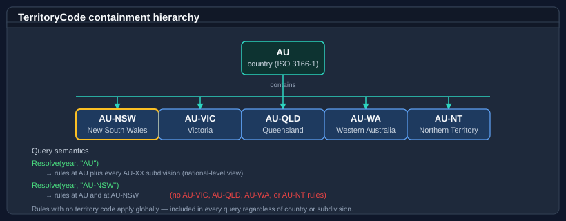

Territories and regional composition
TerritoryCode is the strongly-typed scope used by rules, adjustments, and queries. It wraps an ISO 3166-1 alpha-2 country code with an optional ISO 3166-2 subdivision (AU, AU-NSW, GB-SCT, US-CA) and exposes containment semantics that let national and regional rules compose naturally.
For the conceptual overview, see Core concepts. Territory arguments to the service, the by-year extension, and the working-day extensions are always plain string values ("AU", "AU-NSW"); TerritoryCode is the value type that parses, normalizes, and reasons about those strings.
Anatomy
A TerritoryCode carries two pieces of information:
| Member | Description |
|---|---|
Country |
The ISO 3166-1 alpha-2 country code (AU, GB, US). Always upper-case in canonical form; the empty string for the default value. |
Subdivision |
The optional ISO 3166-2 subdivision suffix (NSW, SCT, CA). null when the territory refers to the whole country. |
IsSubdivision |
true when Subdivision is non-null — the code names a subdivision rather than a whole country. |
IsEmpty |
true for the default TerritoryCode (the default(TerritoryCode) value, with an empty Country). |
Parent |
The containing country-level TerritoryCode for a subdivision (e.g. AU-NSW → AU); the value itself for a country-level code; the default value when this code is empty. |
The canonical string form is Country for a country-level code and Country-Subdivision (with a hyphen) for a subdivision-level code. TerritoryCode converts implicitly to string (so a value flows straight into a service call) and explicitly from string (the explicit cast (TerritoryCode)"AU" throws on a malformed code, matching Parse):
using Bodu.Globalization.Calendar;
TerritoryCode auNsw = TerritoryCode.Parse("AU-NSW");
string code = auNsw; // implicit → "AU-NSW"
TerritoryCode au = auNsw.Parent; // → AU
bool isSub = auNsw.IsSubdivision; // → true
TerritoryCode gb = (TerritoryCode)"GB-SCT"; // explicit cast — throws on a malformed code
TerritoryCode is a value type with full == / != equality, so two codes parsed from "AU-NSW" and " au-nsw " compare equal.
Parsing
TerritoryCode provides both throwing and non-throwing parsers, plus a list parser for comma-separated input:
using Bodu.Globalization.Calendar;
// Throwing parse — use when the input is trusted authored data.
TerritoryCode au = TerritoryCode.Parse("AU");
TerritoryCode auNsw = TerritoryCode.Parse("AU-NSW");
// Try-parse — use for user input or external data.
if (TerritoryCode.TryParse(userInput, out TerritoryCode territory))
{
// territory is canonical here.
}
// Comma-separated list — convenient for multi-territory query parameters.
IReadOnlyList<TerritoryCode> territories =
TerritoryCode.ParseList("AU-NSW, AU-VIC, NZ");
The library normalizes whitespace and casing during parsing, so " au-nsw " and "AU-NSW" parse to the same value.
Because the service and extensions accept plain strings, you rarely need to parse explicitly — pass "AU-NSW" directly. Parse when you want to inspect a code's Country, Subdivision, or Parent, or to validate untrusted input before querying.
Containment

TerritoryCode.Contains(other) returns true when other is within the scope of the current territory:
| Receiver | Argument | Contains returns |
|---|---|---|
AU |
AU |
true |
AU |
AU-NSW |
true |
AU |
AU-VIC |
true |
AU |
NZ |
false |
AU-NSW |
AU |
false |
AU-NSW |
AU-NSW |
true |
AU-NSW |
AU-VIC |
false |
The rule is simple: a country contains itself and every subdivision; a subdivision contains only itself.
This is the same containment relation that NotableDateService applies during resolution: a rule authored at AU resolves for queries at AU and at any AU-XX, and an adjustment scoped to AU-NT only fires for AU-NT queries.
TerritoryCode au = TerritoryCode.Parse("AU");
TerritoryCode auNsw = TerritoryCode.Parse("AU-NSW");
bool a = au.Contains(auNsw); // true — AU ⊇ AU-NSW
bool b = auNsw.Contains(au); // false — a subdivision does not contain its country
Authoring territory scope in a document
A rule narrows its applicability by listing <Territory code="…"> elements inside its <Applicability>. A rule with no <Territory> is globally applicable. Use the country code to cover a whole country, or a subdivision code to cover one region:
<!-- National holiday — applies to every Australian subdivision. -->
<NotableDate id="australia-day" displayName="Australia Day" category="PublicHoliday" defaultNonWorkingDay="true">
<Rules>
<Rule id="default">
<Applicability>
<Territory code="AU" />
</Applicability>
<Strategy><Fixed month="January" day="26" /></Strategy>
</Rule>
</Rules>
</NotableDate>
<!-- Regional public holiday — applies only to Victoria. -->
<NotableDate id="melbourne-cup-day" displayName="Melbourne Cup Day" category="PublicHoliday" defaultNonWorkingDay="true">
<Rules>
<Rule id="default">
<Applicability>
<Territory code="AU-VIC" />
</Applicability>
<Strategy><DayOfWeekInMonth month="11" dayOfWeek="Tuesday" weekOrdinal="First" /></Strategy>
</Rule>
</Rules>
</NotableDate>
Multiple <Territory> elements union: list AU-NSW and AU-ACT to scope a single rule to both, without covering all of AU. See Authoring notable date rules for the full applicability vocabulary.
Re-scoping an imported concept
When you import a shared concept from a bundled catalogue, you can re-scope it to your territory with the territory attribute on a <Use> directive. This keeps the imported strategy and display name but limits its applicability for your document:
<Imports>
<Import resource="global-core">
<!-- Pull in New Year's Day but apply it only to the United States. -->
<Use notableDateRef="new-years-day" territory="US" />
</Import>
</Imports>
An <Import> with no <Use> imports every concept it defines; a local concept of the same id wins over an imported one. See Authoring notable date rules for imports and overrides in full.
Querying composition
A query passes a single territory string, and the service returns every occurrence whose scope contains that code (plus globally-scoped rules). For Australia:
using Bodu.Globalization.Calendar;
NotableDateService service = AsiaPacificCalendarData.CreateService("AU");
// AU national rules + NSW-specific rules + globals.
IReadOnlyList<NotableDate> nsw = service.Resolve(2026, "AU-NSW");
// AU national rules + VIC-specific rules (including Melbourne Cup) + globals.
IReadOnlyList<NotableDate> vic = service.Resolve(2026, "AU-VIC");
By-year resolution (service.Resolve(year, territory)) is the extension method NotableDateServiceExtensions.Resolve; the single-day and range overloads (service.Resolve(DateOnly, territory), service.Resolve(DateRange, territory)) are on INotableDateService itself. All take the territory as a plain string.
The same containment applies to adjustments: an adjustment scoped to AU fires for any AU-XX query, while an AU-NT adjustment only fires for NT-specific queries. See Observance adjustment rules.
Discovering what a service covers
GetSupportedTerritories() enumerates the territory codes the loaded resource scopes rules to. It is the natural input for a UI picker or a deployment sanity-check:
IReadOnlyList<string> territories = service.GetSupportedTerritories();
foreach (string code in territories)
Console.WriteLine($"{code}: {service.Resolve(2026, code).Count} dates in 2026");
The companion GetSupportedCalendars() returns the CalendarSystem values the resource uses (Gregorian, Hijri, Hebrew, …).
Avoiding duplicate regional rules
The containment relation is the right way to model "national rule + a few regional variations":
- Author the national rule once at the country level (
<Territory code="AU" />). - For each subdivision that genuinely differs, author a separate concept or rule scoped to that subdivision (
<Territory code="AU-NT" />), or suppress the national rule for that subdivision with a<RemoveRule>override and add the variant.
Listing the same rule under every subdivision of one country produces duplicate occurrences and is rarely correct — scope it to the country instead. When you need a rule at several subdivisions but not the whole country (e.g. an extra holiday in some AU states only), author one rule per state, each scoped to its subdivision. The holiday patterns guide shows worked examples for both shapes.
Data-pack conventions
The official Bodu.Globalization.Calendar.<Region> companion packages follow the conventions above:
- National rules are authored at the country level (
AU,US,GB). - State / province / region variants use the canonical ISO 3166-2 subdivision suffix (
AU-NSW,US-CA,GB-SCT). - Cross-country composition (e.g. EU bank holidays) is not modelled via territory code — each country ships its own rule set under its own ISO code. Cross-cutting groupings belong in tags.
See Calendar data packs for the per-pack helpers.
Where to go next
- Core concepts — the vocabulary at a glance.
- Using NotableDateService — how containment shapes query results.
- Authoring notable date rules — full authoring workflow with worked examples.
- Calendar data packs — region-specific bundled rule sets.
- Bodu.Globalization.Calendar API reference — generated API surface.
- Globalization & Calendars guides — every guide in this topic: the runtime, companions, data packs, and the notable-date catalogue.